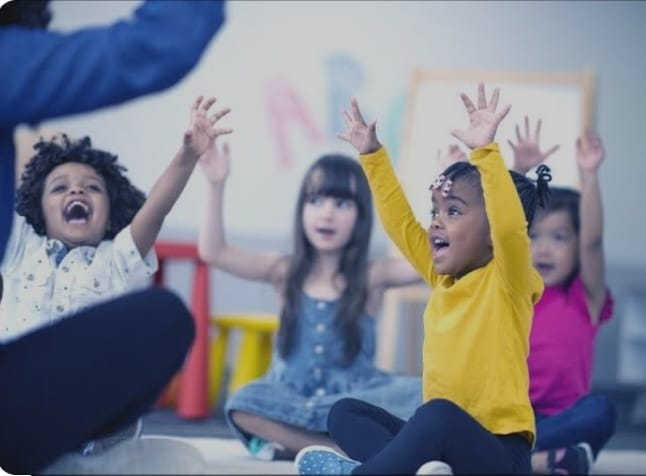

Grupos
- Criancas 4-6
- Criancas 7-10
 Jóvens 14-17
Jóvens 14-17
Tenho a certeza que o aprendizado de um novo idioma pode abrir portas em várias areas. Aprender ingles é fundamental já que é a lingua máis utilizada como meio de comunicacao
em diversos paí.
Muitas criancas e jovens tem o desejo de aprender esse novo idioma, porém se deparam muitas vezes com um ensino tardio e precaário. Isso geralmente faz com que elas desenvolvam um sentimento de medo e de incapacidade para
aprender uma nova lingua. Eu mesma já tive esse mesmo sentimento.
Por isso estou iniciando este projeto de ensino de ingles para criancas e jovens a um preco acessivel. Onde elas poderao ter contato com o idioma ingles sem tanta pressao,
podendo ter a oportunidade de aprender de uma maneira mais natural.
Professora trilíngue, certificada TEFL (Ensino de ingles como lengua secundária) pela Universidade Brigham Young Idaho, dos Estados Unidos. Tenho experiência lecionando para todas as idades, a distância e presencial. Morei no exterior em dois países com idiomas diferentes do meu nativo, o que me ajudou a entender as necessidades dos meus alunos. Implementei um método orgânico, com uma abordagem natural a uma nova linguagem o que os ajudou a manter o interesse, alcançando bons resultados.
Jóvens 14-17
Media